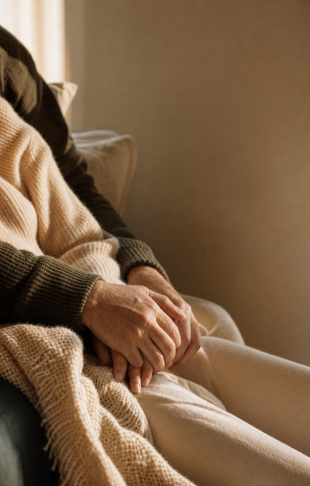

Before a small signal becomes a big problem.
Functional care for people who would rather look deeper sooner.
This version keeps the generated image direction, but changes the copy spine to Vital Health's real story: functional, preventive care shaped by Julie's emergency medicine lens and the belief that many problems deserve attention before they become urgent.
The goal is not to scare people. It is to make the preventive idea feel obvious: listen earlier, look deeper, and start with a real conversation.

Functional care for people who would rather look deeper sooner.
Book a complimentary consultation. Thirty minutes, no cost, no pressure.
The future automation should store critique as rules before regenerating. This pass adds a copy rule: extract the true strategic spine from the business, not just the visual vibe.
The site is a brand source, not an image source. Ads need new campaign assets that feel adjacent.
The cover image and line must create enough curiosity or emotion to make swiping feel worthwhile.
Different images are not enough if every slide has the same border and header treatment.
For Vital Health, the truth is preventive functional medicine shaped by emergency medicine experience.